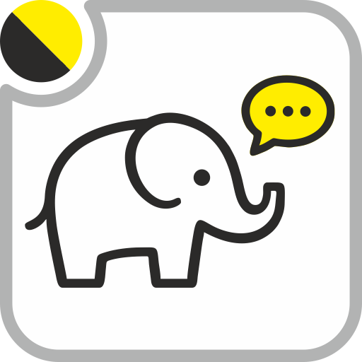

For Odoo consultants
Chatboo opens an AI chat on top of the screen your client is already using. It knows what is on that screen, answers with the user's own permissions, and goes away with one click.
Odoo series
14.019.0
Tested, with a branch ready to install.

They export spreadsheets into another application, or hand their Odoo password to an outside service. The answer lands somewhere else, and the work stops while they copy it back.
Chatboo opens on top of the screen they are already on.
It is a layer you put on and take off. Close it, keep working, and the elephant tells you when the answer is ready.
Turn what you repeat into a skill. Most of the time it runs without calling the AI: zero cost, same answer every time.
It knows what is on screen. If several records match, click the row and that is it.
/ and pick a skill: a procedure written once, for the client's routines.Clone the 14.0 or 19.0 branch of pns_ai_chatboo, pns_ai_mcp and pns_base into the addons path and install Chatboo from Apps. On Odoo 14, first run pip install "openpyxl>=3.1.2".
Chatboo talks to the AI through pns_ai_mcp. Follow its Getting started: AI administrator, your access and one provider.
Done. Click the elephant in the top bar.
On GitHub: patanegra-soft/pns_ai_chatboo.
main is one tree for every series: shared code in common/ and one stack per OWL generation (owl1 for Odoo 14 and 15, owl2 for 16 to 19, owl3 for 20)../install_flat.sh 19.0 <dir> builds the flat module of a series. The branches 14.0 to 20.0 are that result, ready for the addons path.unit_tests/, pytest) live in main. The Odoo tests are in tests/.Bugs: an issue, with the bug form. Ideas and questions: Discussions.
Para consultores de Odoo
Chatboo abre un chat de IA encima de la pantalla que tu cliente ya está usando. Sabe qué hay en esa pantalla, responde con los permisos del propio usuario y se quita con un clic.
Versiones de Odoo
14.019.0
Probadas, con una rama lista para instalar.
Se exportan Excels a otra aplicación, o se le da la contraseña de Odoo a un servicio de fuera. La respuesta llega a otro sitio y el trabajo se para mientras se copia de vuelta.
Chatboo se abre encima de la pantalla en la que ya estás.
Es una capa de quita y pon. La cierras, sigues trabajando y el elefante te avisa cuando la respuesta está lista.
Lo que repites lo conviertes en un skill. Casi siempre se ejecuta sin llamar a la IA: coste cero y la misma respuesta cada vez.
Sabe qué hay en pantalla. Si varios encajan, pinchas la fila y listo.
/ y eliges un skill: un procedimiento escrito una vez, para las rutinas del cliente.Clona la rama 14.0 o 19.0 de pns_ai_chatboo, pns_ai_mcp y pns_base en el addons path e instala Chatboo desde Aplicaciones. En Odoo 14, antes, pip install "openpyxl>=3.1.2".
Chatboo habla con la IA a través de pns_ai_mcp. Sigue su puesta en marcha: administrador de IA, tu acceso y un proveedor.
Listo. Pulsa el elefante de la barra superior.
En GitHub: patanegra-soft/pns_ai_chatboo.
main es un solo árbol para todas las versiones: código común en common/ y una pila por generación de OWL (owl1 para Odoo 14 y 15, owl2 de la 16 a la 19, owl3 para la 20)../install_flat.sh 19.0 <dir> construye el módulo plano de una versión. Las ramas de la 14.0 a la 20.0 son ese resultado, listas para el addons path.unit_tests/, pytest) viven en main. Los tests de Odoo están en tests/.Errores: un issue, con el formulario de error. Ideas y preguntas: Discussions.